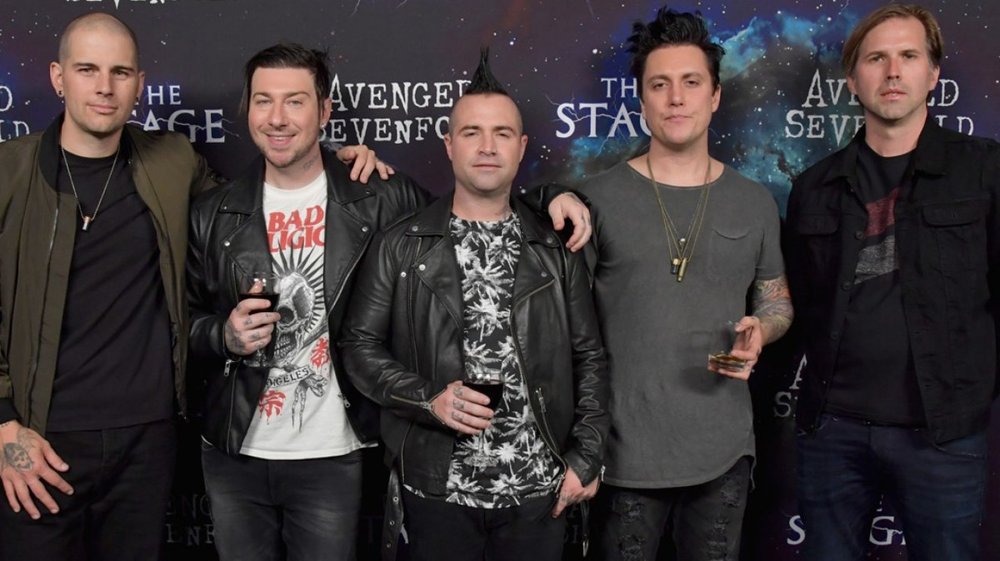

Music comes in all different packages. Some is worse than others. An example of really bad music is Tom MacDonald . But there is also great music, like Gerard Way from My Chemical Romance
There are also a ton of different genres. One genre is Rap and another is Rock. Right now I really like Rap. In the past I really liked metal but if come off it a little.
| Good Artists | Bad Artists |
|---|---|
| Tyler The Creator | Tom MacDonald (again) |
| Laufey | AJR |